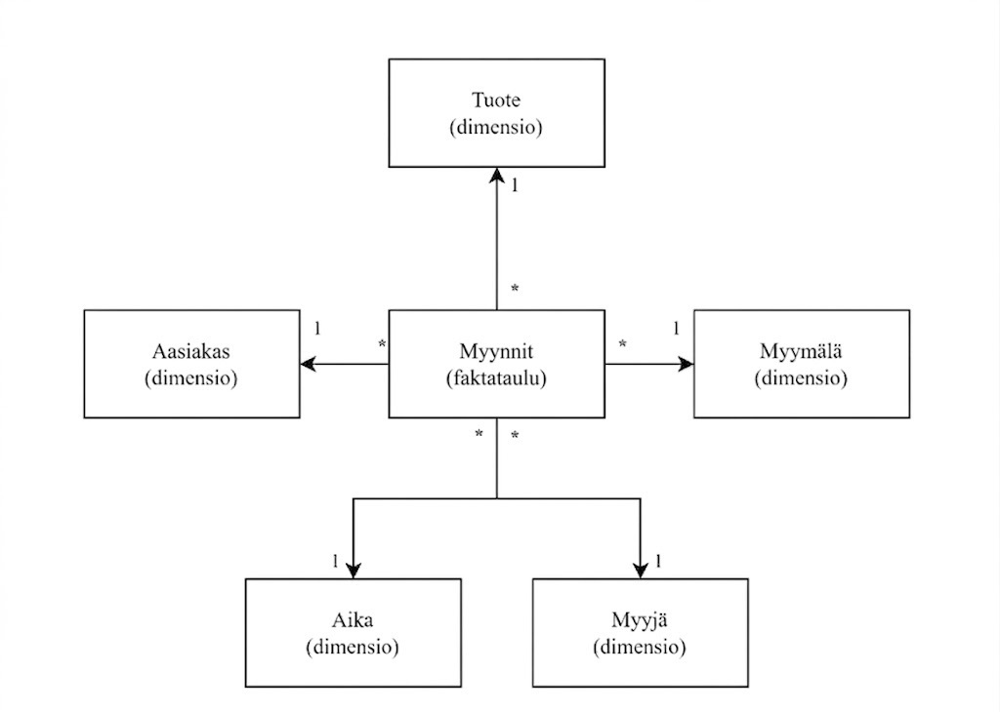

Tähtimalli on vähintään kahdesta taulusta koostuva tietomalli, joka on yksi suosituimmista Power BI:ssä ja SSAS:ssä käytetyistä tietomallityypeistä. Tähtimalli on parhaimmillaan jopa 3 kertaa nopeampi kuin yksi litistetty taulu. Tähtimalli koostuu yhdestä faktataulusta ja useasta dimensiotaulusta.
Tähtimallin toiminta perustuu normalisoituun relaatiotietokantaan, jonka faktataulussa sijaitsevat esim. transaktiotason tapahtumat, kuten myyntitapahtumat. Dimensiotauluissa taas sijaitsevat dataa kuvailevat tiedot, kuten asiakas-, tuote- tai aikatiedot. Faktataulusta lähtee relaatio jokaiseen dimensiotauluun josta rakenne saakin nimensä, muoto muistuttaa tähteä kuten alla olevasta kuvvasta ilmenee. Jokainen faktataulun rivi sisältää mitattavia lukuja (esim. myyntieurot, kappalemäärä) sekä vierasavaimia, jotka osoittavat dimensiotauluihin. Dimensiot vastaavat kysymyksiin: kuka (Asiakas), mitä (Tuote), milloin (Päivämäärä), missä (Myymälä). Tämä jako pitää tietomallin selkeänä: luvut joita lasketaan ovat faktassa ja konteksti on dimensioissa.

Kuva: * merkitsee vierasavainta (FK), 1 pääavainta (PK).
Tähtimallin taulujen väliset yhteydet perustuvat avainkenttiin ja niiden välisiin relaatioihin. Tässä esimerkissä käydään läpi yksi relaatio.
| Avain | Lyhenne | Sijainti | Tehtävä | Esimerkki |
|---|---|---|---|---|
| Pääavain | PK (Primary Key) | Dimensiotaulu | Yksilöi jokaisen rivin, ei duplikaatteja tai ei tyhjiä arvoja | AsiakasTunnus dimensiossa Asiakas |
| Vierasavain | FK (Foreign Key) | Faktataulussa | Viittaa dimensiotaulun pääavaimeen ja luo yhteyden taulujen välille, tyhjille arvoille käsittelysäännöt | AsiakasTunnus faktataulussa Myynti |
Faktataulussa yhdellä myyntirivillä voi olla useita vierasavaimia kuten esim. yksi asiakkaalle, yksi tuotteelle, yksi päivämäärälle. Jokainen niistä osoittaa vastaavan dimensiotaulun pääavaimeen.
Dimensiotaulun PK:n on oltava AINA uniikki (yksi rivi per avain). Jos sama arvo esiintyy useasti, relaatio muuttuu moni-moneen-suhteeksi, joka rikkoo tähtimallin ja aiheuttaa virheellisiä laskutuloksia Power BI:ssä. Moni-moneen-suhteita käyttäessä myös tietomalli muuttuu moniselitteiseksi yksiselitteisen sijaan. Älä käytä moni-moneen-suhteita, rikot sillä enemmän asioita kuin korjaat.
Normalisoinnilla tarkoitetaan sitä, että data sijaitsee vain yhdessä paikassa. Tämä tekee tietomallista yksiselitteisen ja estää datan toistumisen, mikä puolestaan vähentää teknistä velkaa ja helpottaa laskurien (measures) tekemistä. Ferrari ja Russo (2017) korostavat, että tähtimallin suurin hyöty on sen helppo ymmärrettävyys ja hallinta.
Katso termistöstä: Normalisointi · Denormalisointi
Hyvin suunniteltu tähtimalli pienentää tietomallin kokoa huomattavasti verrattuna denormalisoituun "yhteen isoon tauluun". Russo ja Ferrari (2021) kertovat verkkoartikkelissaan, että tähtimallia käyttävän pienemmän tietomallin muistikoko on 16,80 GB, kun taas denormalisoitu yhtä taulua käyttävä malli vie 44,51 GB. Analyysipalvelimella käytettävän muistin määrä on siis yhteen tauluun pakatussa mallissa 2,65 kertaa suurempi.
Hyvin suunnitellun tietomallin hyödyt ovat taloudellisesti merkittävät. Esimerkiksi Azure Analysis Services -palvelua käytettäessä alle 25 GB:n muistikanta (S1) maksaa Microsoftin hinnoittelun mukaan 1 266,37 € kuussa, kun taas huonommin suunnitellun mallin vaatima vähintään 50 GB:n muistikanta (S2) maksaa 2 532,73 € kuussa. Tämä tarkoittaa käytännössä hinnan tarpeetonta tuplaantumista. Hyvällä tietomallisuunnittelulla ja normalisoiduilla tähtimalleilla voidaan vuosittain tehdä todistettavasti vähintään 15 196 € säästöt. Saadut hyödyt ovat todennäköisesti vielä suurempia, sillä tietomallit käyttävät muistia datan tallentamisen lisäksi myös laskennan suorittamiseen.
| Mallityyppi | Muistikoko | Azure AS -taso | Azure AS -hinta / kk (2026, €) |
|---|---|---|---|
| Tähtimalli (normalisoitu) | 16,80 GB | S1 (25 GB) | 1 266 € |
| Denormalisoitu yksittäinen taulu | 44,51 GB | S2 (50 GB) | 2 532 € |
Hinnat lisätty taulukkoon 2026: Azure Analysis Services -hinnoittelu. Hinnat EUR, veroton.
Miksi tähtimalli kannattaisi rakentaa?